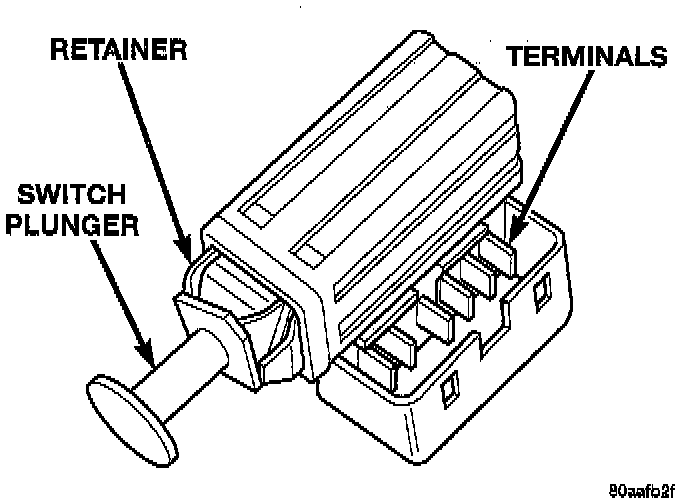

Brake Light Switch: Service and Repair
REMOVAL1. Remove steering column cover and lower trim panel for switch access (if necessary).
2. Press brake pedal downward to fully applied position.
3. Rotate switch approximately 30° in counterclockwise direction to unlock switch retainer. Then pull switch rearward and out of bracket.

4. Disconnect switch wire harness and remove switch from vehicle.
INSTALLATION
1. Pull switch plunger all the way out to fully extended position.
2. Connect harness wires to switch.
3. Press and hold brake pedal in applied position.
4. Align tab on switch with notch in switch bracket. Then insert switch in bracket and turn it clockwise about 30� to lock it in place.
5. Release brake pedal, then pull pedal fully rearward. Pedal will set plunger to correct position as pedal pushes plunger into switch body. Switch will make ratcheting sound as it self adjusts.